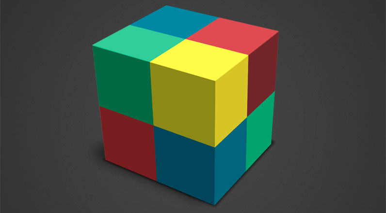
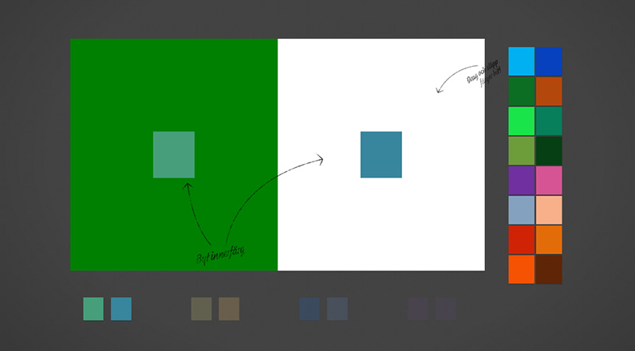
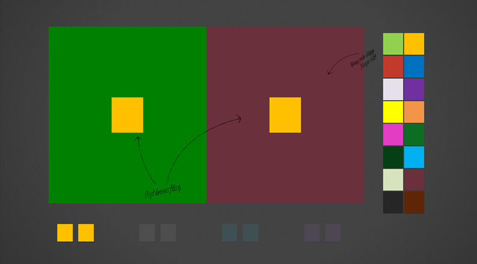
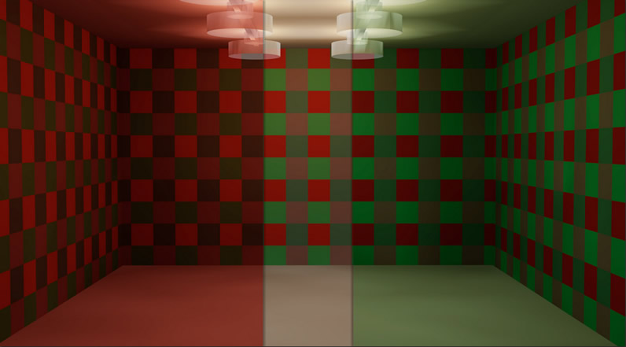
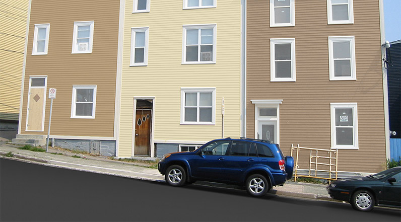
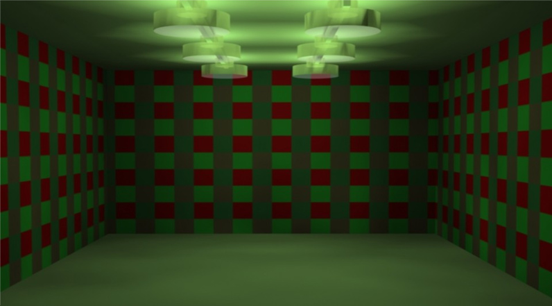
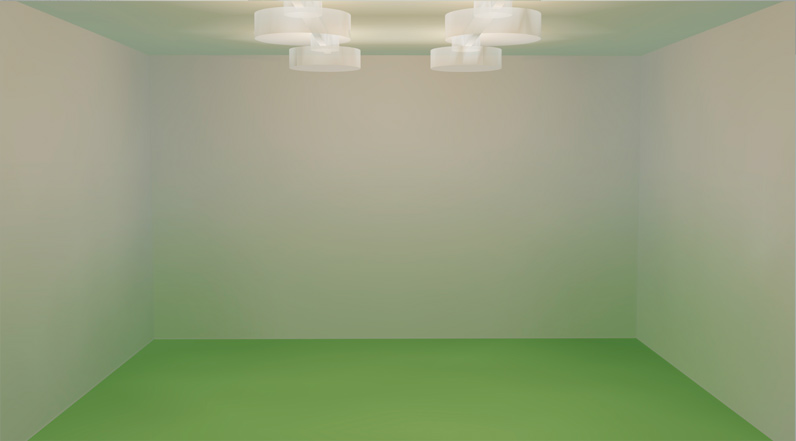
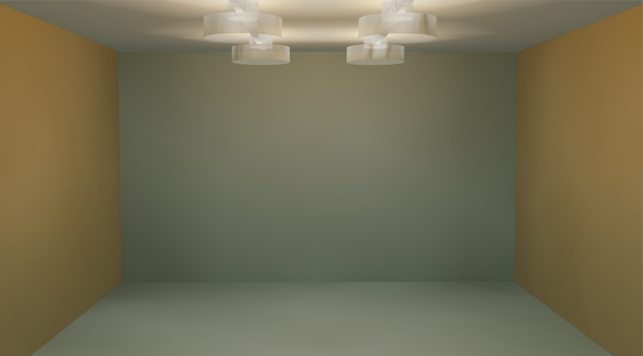

Det virtuella färglaboratoriet
`

Om Virtuella Färglabbet
Läs mer om DVFL, medverkande och NCS-systemet

Simultankontrast: Olika blir lika
Försök att få olika färger att bli lika.

Simultankontrast: Lika blir olika
Försök att få lika färger att bli olika.

RGB-rummet
Se hur rummet ändrar färg med rött och grönt ljus

Uppfattad färg hos målade fasader
Se hur färgen påverkas på längre avstånd

Färg inomhus och utomhus
Se hur den valda färgen uppfattas på såväl fasad som inomhus
Dagsljus i norr- och söderrum
Se rumsfärgen förändras mellan norr- och söderrum

Återspeglingseffekter: Golv
Ändra golvets färg och se hur rummet förändras

Återspeglingseffekter: Blått och gult
Ändra färg på utvalda ytor och se hur färgen ändras